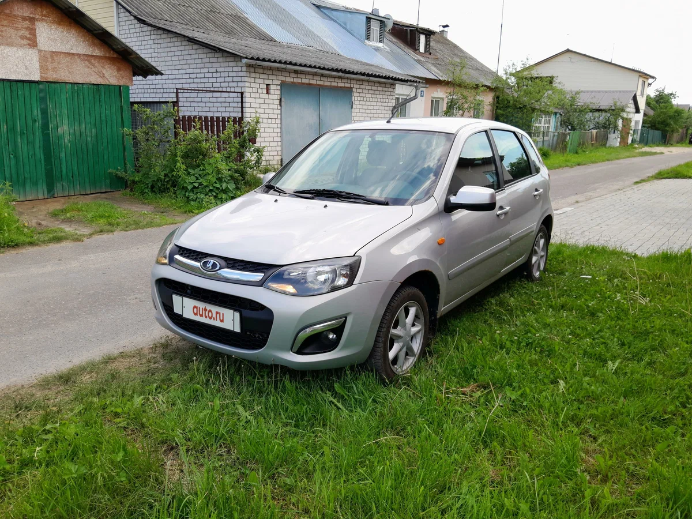
LADA Kalina-2 - семейство российских автомобилей малого класса. Производилось с 2013 по 2018 год. В 2011 году кузов типа седан получил отдельное имя — «Granta», а в 2018 году также были переименованы кузова типов хетчбэк и универсал.
Разработка нового после кузовов ВАЗ-2110/2111/2112 семейства началась в 1993 году: к тому же времени сформировался кузов автомобиля повышенной проходимости следующего поколения — «Лада Нива» ВАЗ-2123, в едином стиле с которым и были оформлены кузова родственного ему семейства «Лада Калина». В 1998 проектируемый автомобиль получил название «Лада Калина». Прототипы демонстрировались в 1999 — хетчбэк, в 2000 — седан и в 2001 — универсал. Предсерийные экземпляры из ОПП, созданные по обходным технологиям, имели раздельные передние фары от ВАЗ-1111 «Ока». К началу серийного производства была частично пересмотрена внешность кузова — особенно его передней части, получившей прозвище «смеющийся дельфин», в результате чего она приобрела более строгие формы.
Второе поколение LADA Kalina, выпускавшееся в кузовах хетчбэк и универсал, было представлено на московском автосалоне в августе 2012 года. Её производство началось 16 мая 2013 года. В своей основе вторая серия несёт серьёзно модернизированный кузов первой серии, однако большинство технических решений перекочевало на Калину с Гранты, например, отрицательный развал колёс, рулевое управление, двигатели, силовая структура кузова. Калина комплектуется четырьмя типами двигателя — ВАЗ-11183 8 клапанов (82 л. с.) переходная версия Калины спорт мало серийная. двигателя — ВАЗ-11186 (87 л. с.), ВАЗ-21126 (98 л. с.) и ВАЗ-21127 (106 л. с.). Новый мотор ВАЗ-21127 — это усовершенствованная модификация 1,6-литрового 16-клапанного агрегата ВАЗ-21126. Характеристики двигателя были улучшены: мощность возросла с 98 до 106 лошадиных сил, крутящий момент увеличился со 145 до 148 Нм. Ну а главное отличие нового мотора от прежнего — это регулируемый впуск. На двигатель ВАЗ-21126 (98 л. с.) возможно установить четырёхступенчатую автоматическую коробку передач от фирмы Jatco, модель JF414E, которая перекочевала на Калину с Гранты. На остальных типах двигателя используется механическая коробка передач. МКПП также подверглась модернизации, рычажный привод переключения передач был заменён на тросиковый, вследствие чего снизилась вибрация на ручку КПП. Хетчбэк с мотором 1,6 л 106 л/с разгоняется до 100 км/ч за 11 с и имеет максимальную скорость 190 км/ч. Автомобиль в базовой комплектации оснащался подушкой безопасности водителя, дневными ходовыми огнями и передними стеклоподъёмниками. В максимальную комплектацию Lada Kalina 2 входили: системы ABS+BAS, ESP и TCS, подушки безопасности пассажира, подогрев передних сидений, аудиосистема с сенсорным экраном, система навигации, кондиционер, климат-контроль, датчики дождя и света, расширенный пакет шумоизоляции. В 2013 году «АвтоВАЗ» запустил производство самой доступной Lada Kalina 2 в кузове универсал. Данная версия оснащена подушкой безопасности водителя, электроусилителем руля и электрическими стеклоподъёмниками передних дверей, аудиоподготовкой и термопоглощающими стёклами. Под капотом автомобиля - новый 8-клапанный бензиновый двигатель объёмом 1,6 литра и мощностью 87 лошадиных сил с облегчённой шатунно-поршневой группой. Трансмиссия механическая пятиступенчатая с тросовым приводом. Отпускная цена универсала Lada Kalina — 330 500 рублей. В 2014 году стартовало серийное производство универсала Lada Kalina Cross. Автомобиль отличается от обычного универсала молдингами, накладками на колёсных арках и порогах, вставками на панели приборов. Машина имеет более жёсткие стабилизаторы поперечной устойчивости, изменённые места крепления пружин и новые амортизаторы, вследствие чего её дорожный просвет увеличен на 23 мм. Также инженеры изменили передаточное отношение главной передачи в трансмиссии — оно составляет 3,9 вместо 3,7.
Рулевое управление и подвеска, несмотря на модернизацию стоек передней подвески с бочкообразными пружинами, в целом, её схема с прямыми коваными рычагами и упирающимися в них диагональными реактивными тягами (именуемыми растяжками) вместо современных L-образных рычагов на сегодняшний день представляется устаревшей, конструкция имеет унификацию со всем семейством построенного на данной со платформе. Двигатель автомобиля Lada Kalina рассчитан на бензин с октановым числом 95. Модели семейства комплектовались 13- или 14-дюймовыми колёсами на штампованных дисках или 14-дюймовыми легкосплавными.Lada Kalina Cross и Lada Kalina Sport с двигателем объёмом 1,6 литра комплектуется колёсами с легкосплавными дисками 15".
Вторая серия спортивного хетчбэка появилась вместе со сменой внешности основной модели, выпускалась с лета 2014 года, старт продаж начался — 6 августа 2014 года. Следующим шагом стал дебют в 2015 году ещё более экстремальной версии — LADA Kalina NFR, под капотом которого разместился форсированный 136-сильный силовой агрегат. Уровень изменений в ходовой части оказался рекордно большим, так, спереди появился мощный стальной подрамник с треугольными рычагами подвески, отсутствующий у базовой LADA Kalina, целый ряд деталей был использован от французского хетчбэка Renault Mégane, включая усиленные ШРУСы, ступицы, тормозные диски. В 2016 году начал серийно устанавливаться самоблокирующийся дифференциал повышенного трения. О качестве доводки Kalina NFR наглядно говорит такой факт: на испытаниях издания Авторевю на модели удалось установить абсолютный рекорд скорости на манёвре «переставка» для автомобиля без системы стабилизации (82 км/ч). LADA Sport каждую из своих серийных моделей запускает в автоспорт, и раллийная версия «Калины NFR» в 2016 году стала первой новой вазовской машиной, зарегистрированной в балтийских странах за последние много лет. В 2016 году на LADA Sport началась сборка «Калины» серии Drive Active. Она получила все элементы стайлинга от версии Sport, а также спортивную подвеску, но двигатель и КПП оставались серийными. Производство серийных LADA Kalina Sport завершилось в 2018 году.
Типы кузовов: хетчбэк, универсал. Салон:
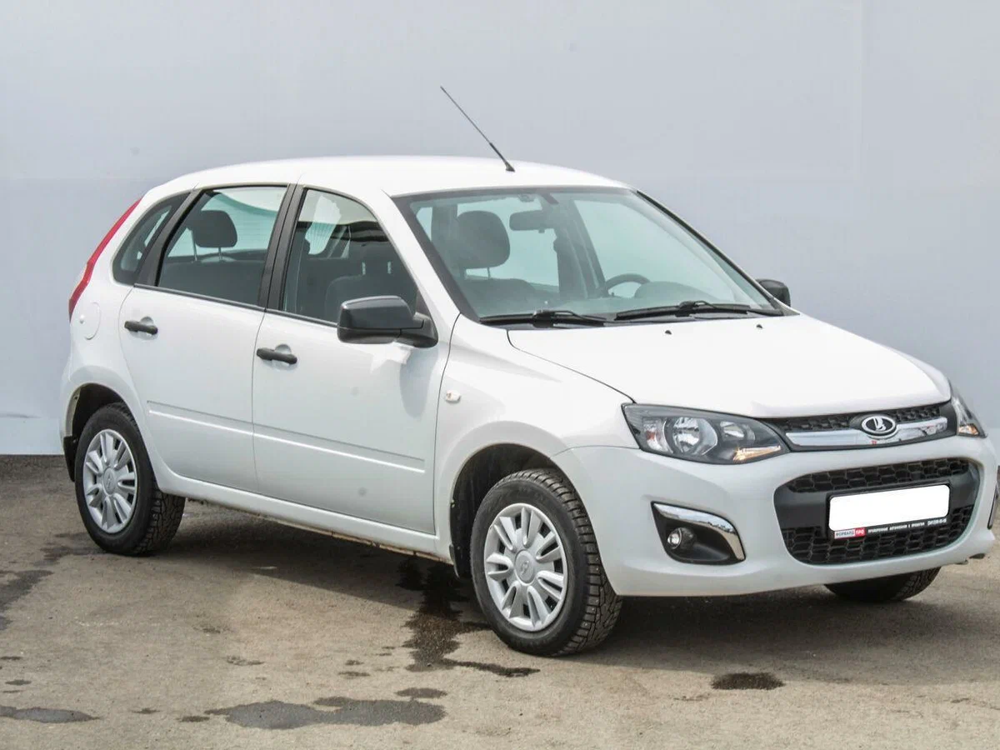
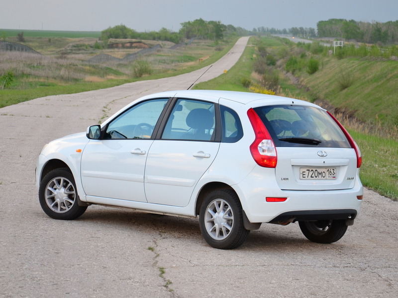
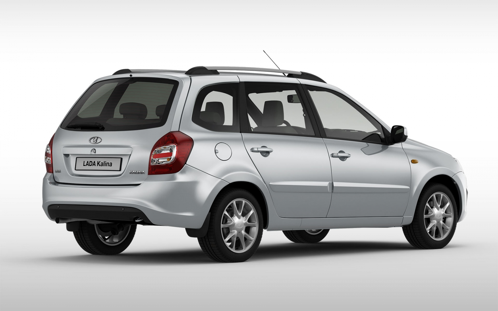
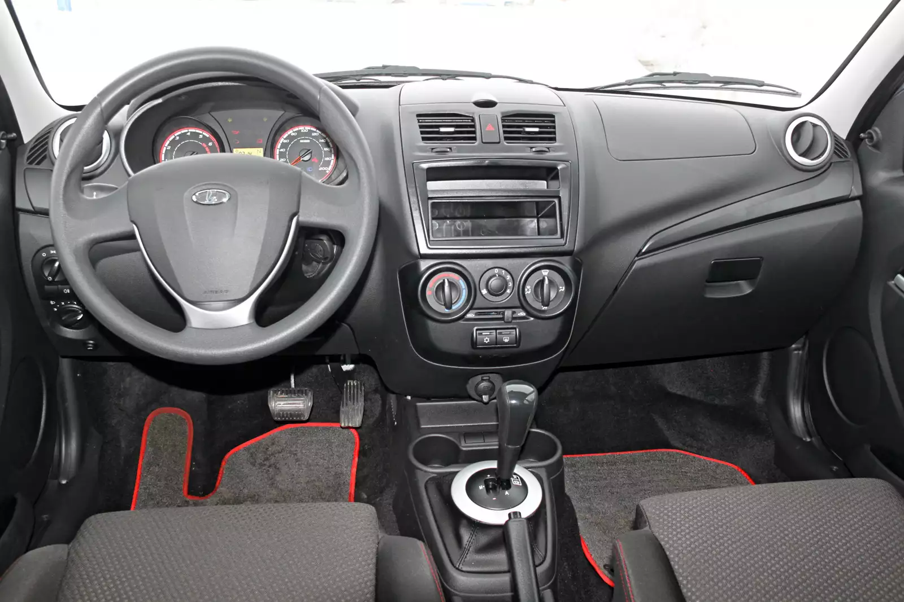
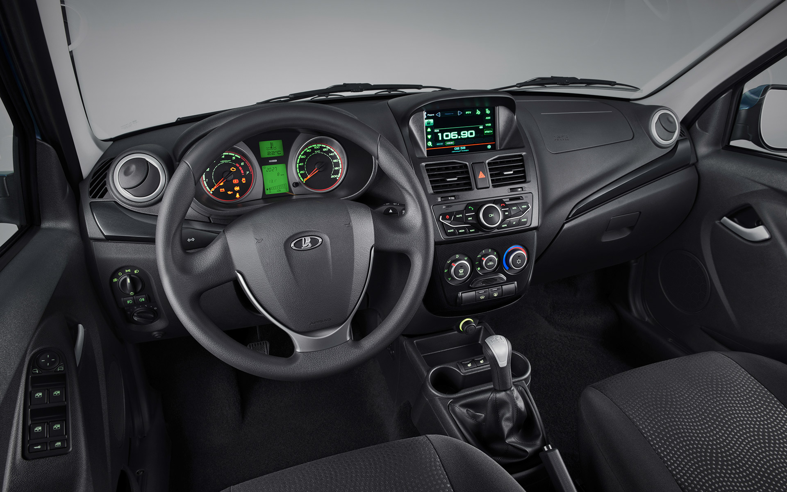
Kalina Cross:
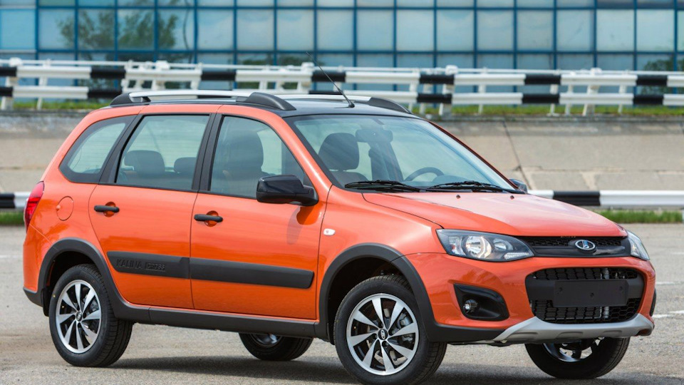
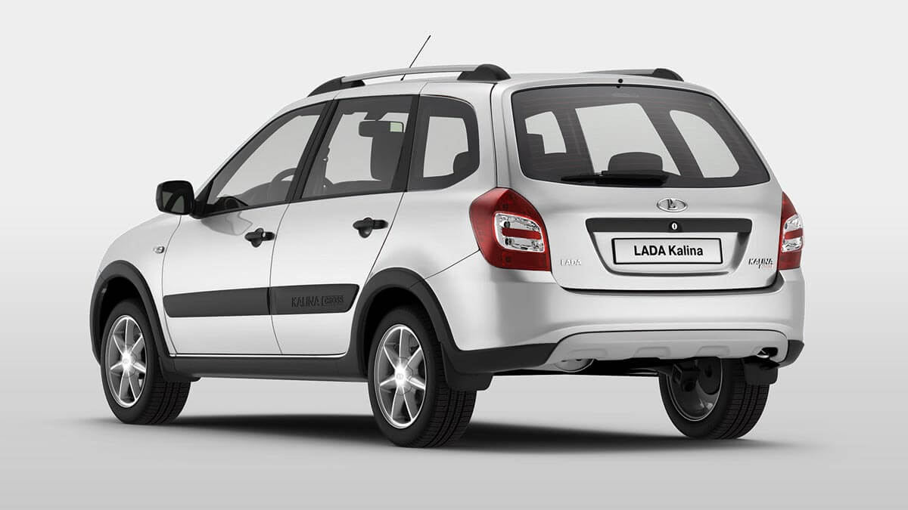
Kalina Sport:
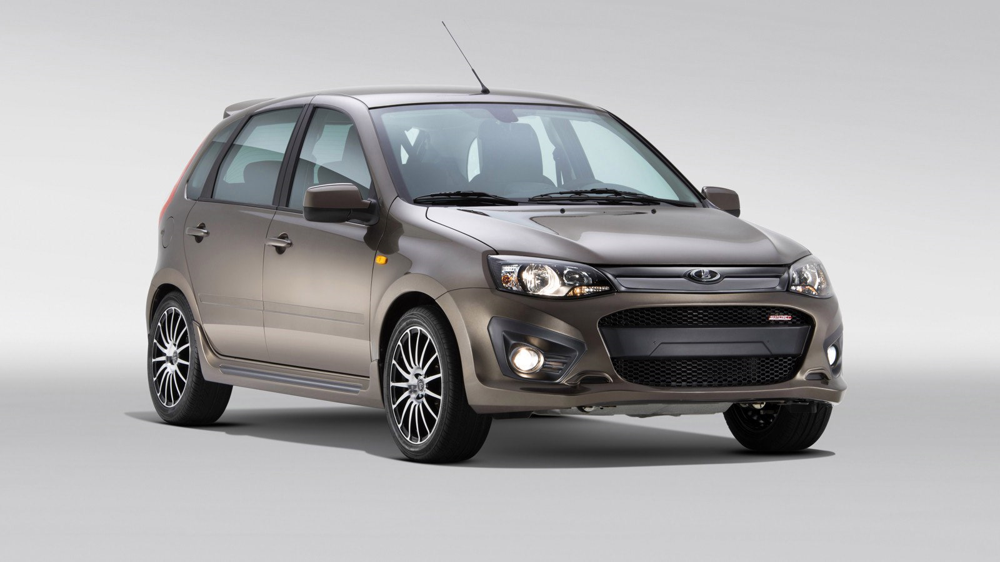
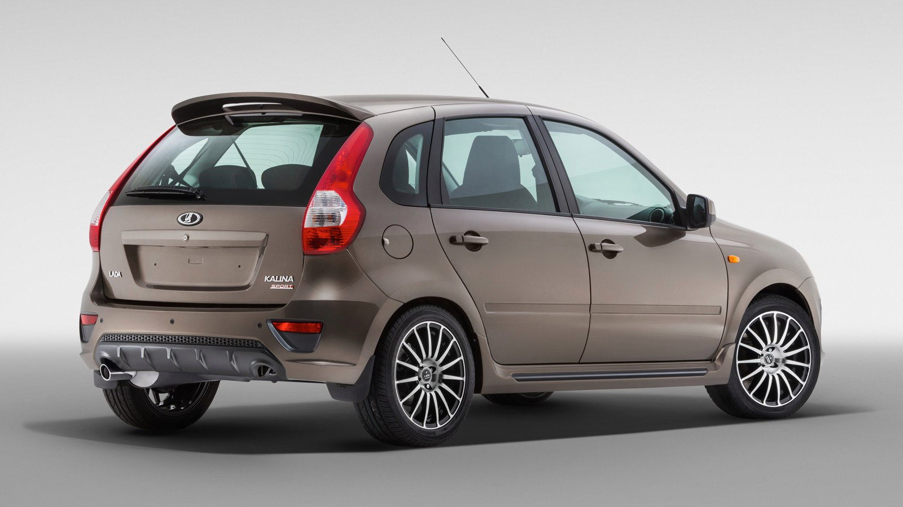
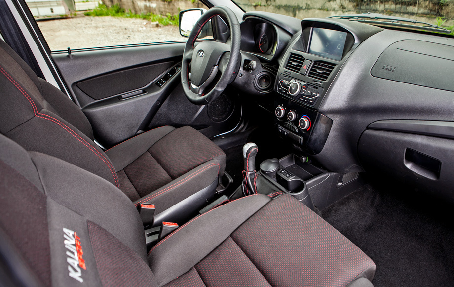
Kalina NFR:
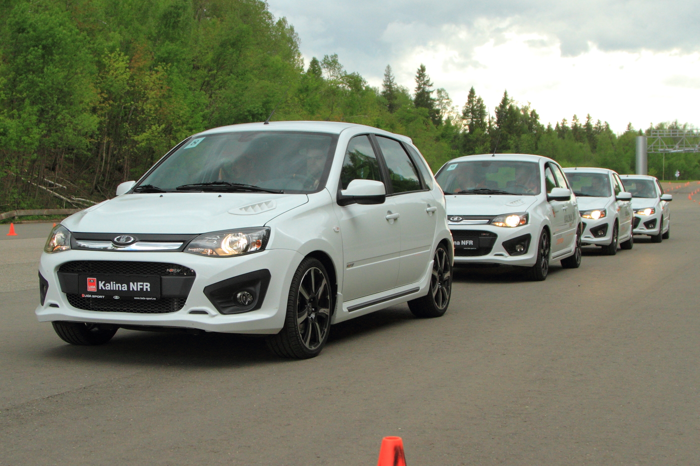
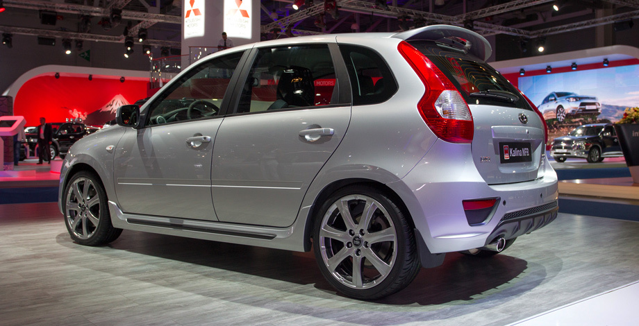
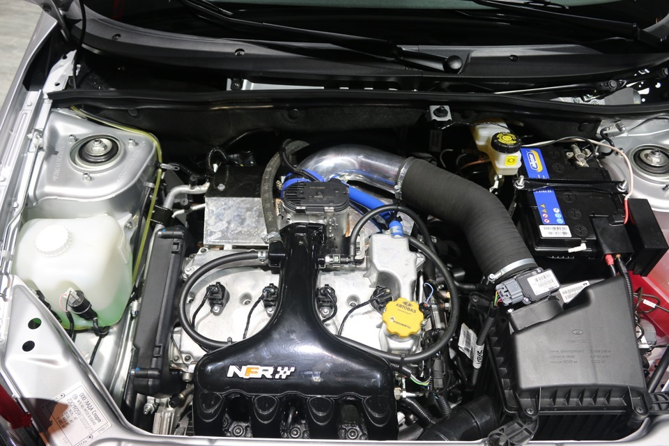